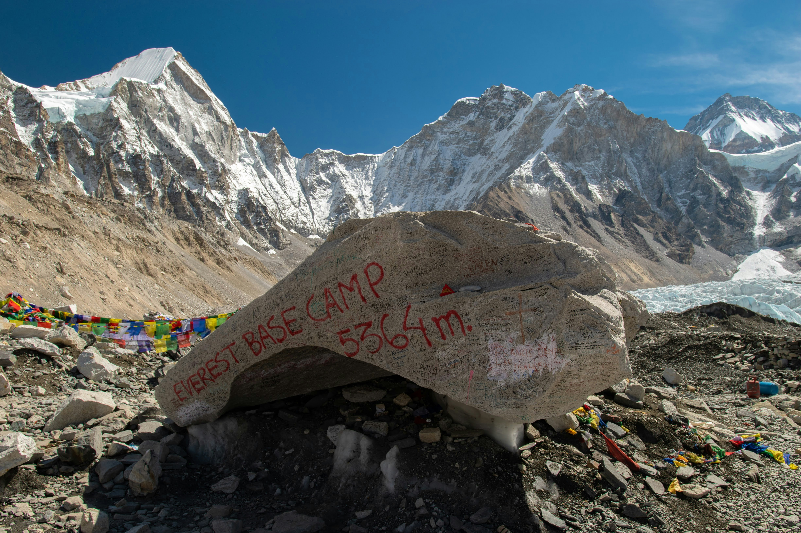
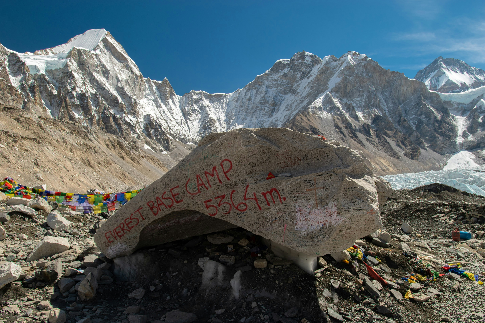

Everest Base Camp Trek: A Journey to the Top of the World
For adventurous souls and trekking enthusiasts, the Everest Base Camp trek is a dream journey—one that takes you to the foot of the world’s highest peak, Mount Everest. With breathtaking views, rich culture, and a challenging yet rewarding path, this trek offers an unforgettable experience. Whether you're a seasoned trekker or someone seeking a once-in-a-lifetime adventure, Everest Base Camp promises awe and inspiration at every step.

 

Image Credit: Unsplash
Highlights of the Trek:
- Duration: Typically 12-14 days
- Highest Point: 5,545 meters (Kala Patthar)
- Best Time to Visit: March to May and September to November
The Journey Begins: Lukla to Namche Bazaar
The Everest Base Camp trek usually starts with an exhilarating flight to Lukla, one of the most thrilling airports in the world. From here, the trek begins with a relatively easy hike through dense forests, crossing suspension bridges draped with prayer flags and passing by small villages that give you a glimpse of traditional Sherpa culture.
After a few days, you’ll reach Namche Bazaar, the Sherpa capital and the main acclimatization point. Nestled in the lap of towering peaks, Namche is a vibrant town full of trekkers, shops, and teahouses. Here, you'll get your first stunning views of Everest and begin to feel the altitude.
Embracing the Challenges: Tengboche to Dingboche
As you ascend higher, the air becomes thinner and the terrain more rugged. From Namche, the trek continues to Tengboche Monastery, one of the most important spiritual centers in the region, where trekkers can experience a sense of serenity with panoramic mountain views. The path then leads to Dingboche, where trekkers often take another acclimatization day to prepare for the final ascent.
Reaching New Heights: Lobuche to Everest Base Camp
From Lobuche to Gorak Shep, the landscape turns barren and rocky, but the proximity to Everest keeps spirits high. Finally, you’ll reach Everest Base Camp (5,364 meters), standing in the shadow of the towering Khumbu Icefall. This is the closest most trekkers get to Everest, and the sense of achievement is overwhelming.
Sunrise at Kala Patthar
The final challenge for most trekkers is the early morning hike up Kala Patthar (5,545 meters) for a panoramic view of Mount Everest and its neighboring peaks at sunrise. Watching the sun's first rays hit the world’s tallest mountain is a moment that will stay with you forever.
The Descent
After reaching Base Camp and Kala Patthar, the trek back down to Lukla begins. While the descent is physically easier, it offers plenty of opportunities to reflect on the journey, revisit friendly teahouses, and take in the views you may have missed on the way up.
Essential Tips for Trekkers
- Acclimatization is Key: Take rest days to acclimatize and avoid altitude sickness.
- Pack Smart: Layers are essential. The weather can change rapidly at high altitudes.
- Hydration: Drink plenty of water to help with acclimatization and maintain energy levels.
- Permits: You'll need the Sagarmatha National Park Permit and TIMS (Trekkers' Information Management System) card.
Make sure you're prepared for your trek with proper gear and planning!
The Cultural Experience
One of the most enriching aspects of the Everest Base Camp trek is the opportunity to engage with the Sherpa community. The Sherpas are known for their incredible mountaineering skills, but their hospitality, spirituality, and deep connection to the mountains will leave a lasting impression. Visiting monasteries, stupas, and participating in local festivals along the way add a cultural dimension to the trek.
Why Everest Base Camp?
The Everest Base Camp trek is not just about reaching the foot of the tallest mountain in the world; it’s about personal achievement, connecting with nature, and experiencing the rich culture of the Himalayas. The breathtaking beauty, the camaraderie with fellow trekkers, and the sense of triumph make this trek an experience like no other.
So, are you ready to embark on the adventure of a lifetime?
Join the Journey
Are you dreaming of the Everest Base Camp trek? Let us guide you on this incredible adventure. Contact us today for expert advice, guided tours, and tips to make your trek unforgettable.